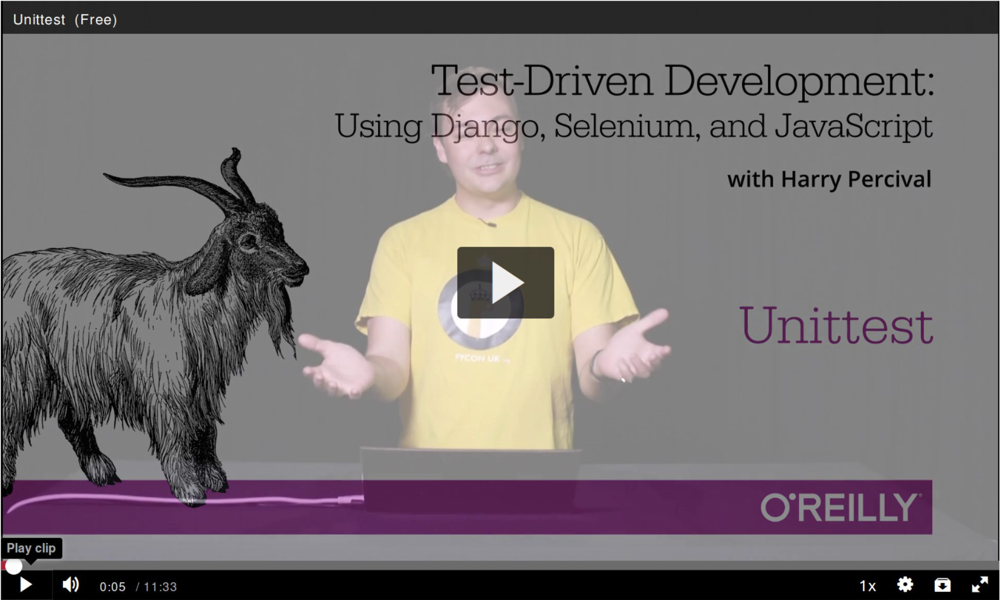

Companion Video
I’ve recorded a 10-part video series to accompany this book.[1] It covers the content of [part1]. If you find you learn well from video-based material, then I encourage you to check it out. Over and above what’s in the book, it should give you a feel for what the "flow" of TDD is like, flicking between tests and code, explaining the thought process as we go.
Plus I’m wearing a delightful yellow T-shirt.

Comments